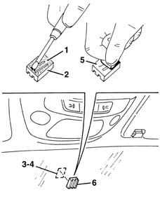

7065C69 interior rear view mirror plate - r r
- Path
- Procedures > 70 FITTINGS > 7065 SEAT BELTS AND ACCESSORIES > 7065C accessories and decorations > 7065C69 interior rear view mirror plate - r r
- Kind
- repair procedure (removal / refitting; the operation number is the code)
- Applies to
- all engines; all production periods
- Interactive page
- https://sloeber94.github.io/elrnDB-lYpsln/en/#/2429698
Applies to: all engines; all production periods
 Removing
Removing
 Refitting
RefittingThis procedure provides instructions for refitting the plate. When correctly secured, the plate can no longer be detached from the glass.
Applies to: all engines; all production periods
Refitting
Removing1. Remove any traces of adhesive from the plate.
2. Thoroughly degrease the mating surfaces between plate and glass using disposable paper and heptane.
3. Remove any adhesive traces from the windscreen glass.
4. Thoroughly degrease mating surfaces between glass and plate using disposable paper and heptane.
5. Apply a suitable length of double-sided adhesive tape to the plate (3M 4265, FASSON 450/460, DUPLOMONT 910 F LOHMANN)
6. Heat the plate to a temperature of 40-50°C and position on the windscreen glass, then apply a pressure of 5 kg/cm2 to the plate; wait until the plate cools to room temperature.
